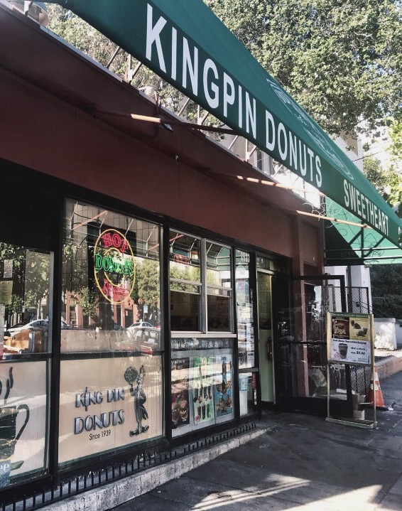
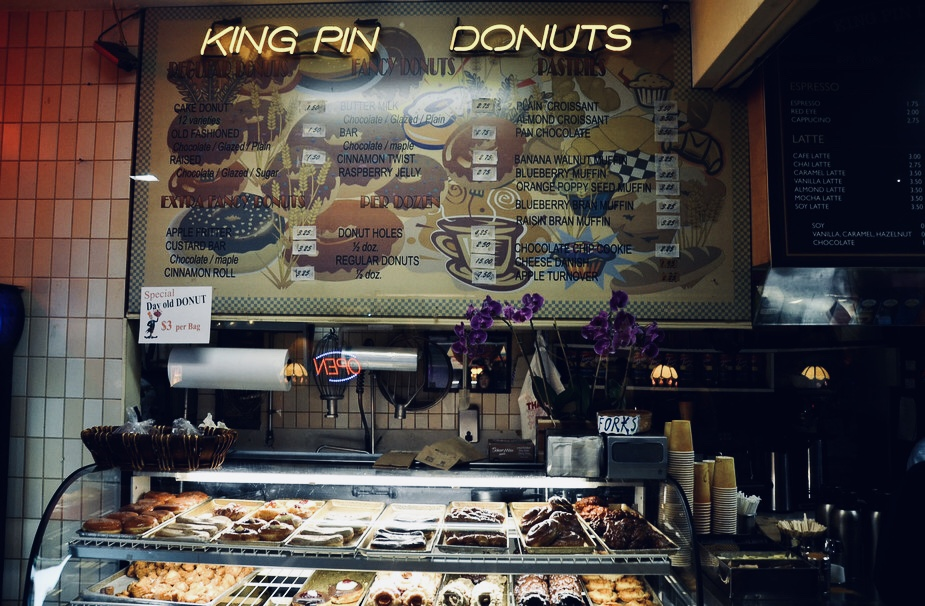

ABOUT US

While we continually strive for innovation at King Pin Donuts, we’re still making our creations the way Dari (the new owner since 1980) intended to feed his young kids, quality, daily fresh, service, we are proud and honored to gain your trust to consume our product.
King Pin Donuts is a family owned and operated business that has been around since the 1930’s. We use fine ingredients and traditional methods to produce exceptional donuts, cakes, muffins, pastries and cookies. King Pin has been a pioneer in the baking industry, king pin donuts is the first to offer trans-fat free products in united state and impact the quality of food offers to consumers.
